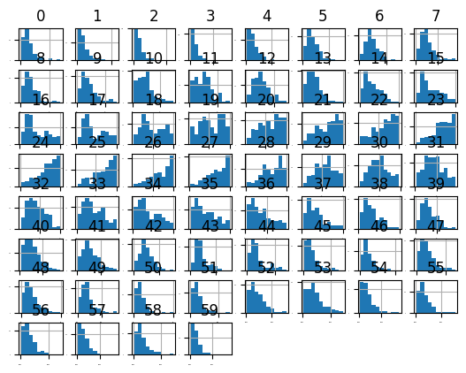
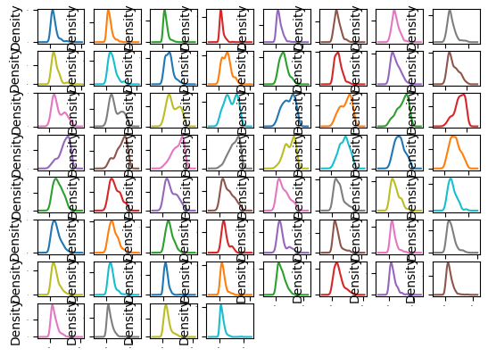
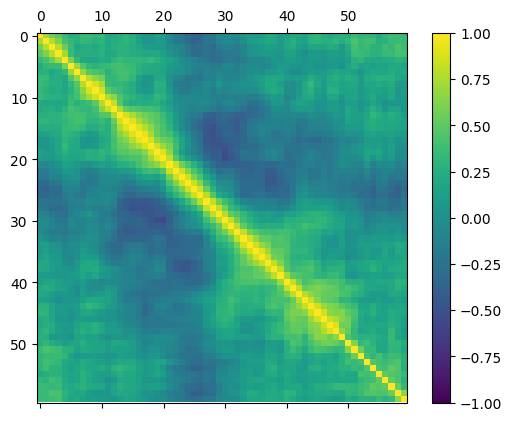
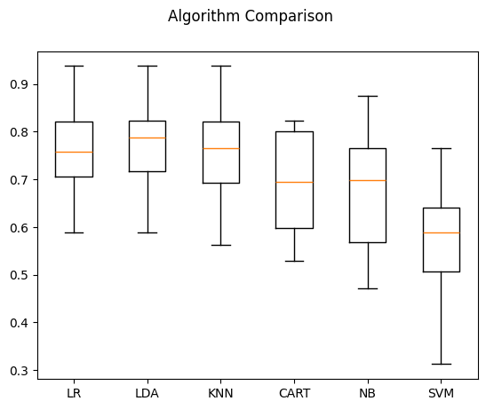
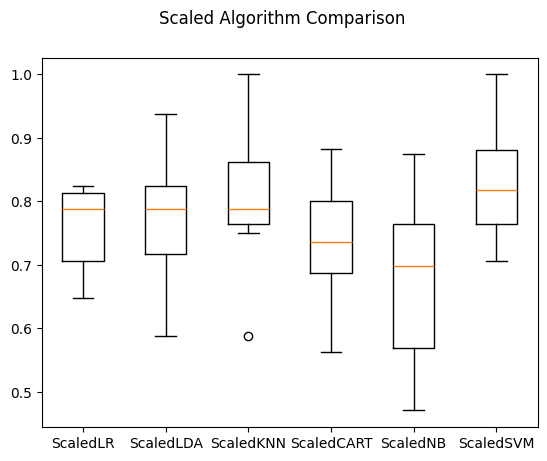

Connectionist Bench (Sonar, Mines vs. Rocks)#
The task is to train a network to discriminate between sonar signals bounced off a metal cylinder and those bounced off a roughly cylindrical rock.
# Load libraries
import numpy
from matplotlib import pyplot
from pandas import read_csv
from pandas import set_option
from pandas.plotting import scatter_matrix
from sklearn.preprocessing import StandardScaler
from sklearn.model_selection import train_test_split
from sklearn.model_selection import KFold
from sklearn.model_selection import cross_val_score
from sklearn.model_selection import GridSearchCV
from sklearn.metrics import classification_report
from sklearn.metrics import confusion_matrix
from sklearn.metrics import accuracy_score
from sklearn.pipeline import Pipeline
from sklearn.linear_model import LogisticRegression
from sklearn.tree import DecisionTreeClassifier
from sklearn.neighbors import KNeighborsClassifier
from sklearn.discriminant_analysis import LinearDiscriminantAnalysis
from sklearn.naive_bayes import GaussianNB
from sklearn.svm import SVC
from sklearn.ensemble import AdaBoostClassifier
from sklearn.ensemble import GradientBoostingClassifier
from sklearn.ensemble import RandomForestClassifier
from sklearn.ensemble import ExtraTreesClassifier
# Load dataset
filename = "datasets/sonar.all-data.csv"
dataset = read_csv(filename, header=None)
# Summarize dataset
print(dataset.shape)
print(dataset.head(20))
(208, 61)
0 1 2 3 4 5 6 7 8 \
0 0.0200 0.0371 0.0428 0.0207 0.0954 0.0986 0.1539 0.1601 0.3109
1 0.0453 0.0523 0.0843 0.0689 0.1183 0.2583 0.2156 0.3481 0.3337
2 0.0262 0.0582 0.1099 0.1083 0.0974 0.2280 0.2431 0.3771 0.5598
3 0.0100 0.0171 0.0623 0.0205 0.0205 0.0368 0.1098 0.1276 0.0598
4 0.0762 0.0666 0.0481 0.0394 0.0590 0.0649 0.1209 0.2467 0.3564
5 0.0286 0.0453 0.0277 0.0174 0.0384 0.0990 0.1201 0.1833 0.2105
6 0.0317 0.0956 0.1321 0.1408 0.1674 0.1710 0.0731 0.1401 0.2083
7 0.0519 0.0548 0.0842 0.0319 0.1158 0.0922 0.1027 0.0613 0.1465
8 0.0223 0.0375 0.0484 0.0475 0.0647 0.0591 0.0753 0.0098 0.0684
9 0.0164 0.0173 0.0347 0.0070 0.0187 0.0671 0.1056 0.0697 0.0962
10 0.0039 0.0063 0.0152 0.0336 0.0310 0.0284 0.0396 0.0272 0.0323
11 0.0123 0.0309 0.0169 0.0313 0.0358 0.0102 0.0182 0.0579 0.1122
12 0.0079 0.0086 0.0055 0.0250 0.0344 0.0546 0.0528 0.0958 0.1009
13 0.0090 0.0062 0.0253 0.0489 0.1197 0.1589 0.1392 0.0987 0.0955
14 0.0124 0.0433 0.0604 0.0449 0.0597 0.0355 0.0531 0.0343 0.1052
15 0.0298 0.0615 0.0650 0.0921 0.1615 0.2294 0.2176 0.2033 0.1459
16 0.0352 0.0116 0.0191 0.0469 0.0737 0.1185 0.1683 0.1541 0.1466
17 0.0192 0.0607 0.0378 0.0774 0.1388 0.0809 0.0568 0.0219 0.1037
18 0.0270 0.0092 0.0145 0.0278 0.0412 0.0757 0.1026 0.1138 0.0794
19 0.0126 0.0149 0.0641 0.1732 0.2565 0.2559 0.2947 0.4110 0.4983
9 ... 51 52 53 54 55 56 57 \
0 0.2111 ... 0.0027 0.0065 0.0159 0.0072 0.0167 0.0180 0.0084
1 0.2872 ... 0.0084 0.0089 0.0048 0.0094 0.0191 0.0140 0.0049
2 0.6194 ... 0.0232 0.0166 0.0095 0.0180 0.0244 0.0316 0.0164
3 0.1264 ... 0.0121 0.0036 0.0150 0.0085 0.0073 0.0050 0.0044
4 0.4459 ... 0.0031 0.0054 0.0105 0.0110 0.0015 0.0072 0.0048
5 0.3039 ... 0.0045 0.0014 0.0038 0.0013 0.0089 0.0057 0.0027
6 0.3513 ... 0.0201 0.0248 0.0131 0.0070 0.0138 0.0092 0.0143
7 0.2838 ... 0.0081 0.0120 0.0045 0.0121 0.0097 0.0085 0.0047
8 0.1487 ... 0.0145 0.0128 0.0145 0.0058 0.0049 0.0065 0.0093
9 0.0251 ... 0.0090 0.0223 0.0179 0.0084 0.0068 0.0032 0.0035
10 0.0452 ... 0.0062 0.0120 0.0052 0.0056 0.0093 0.0042 0.0003
11 0.0835 ... 0.0133 0.0265 0.0224 0.0074 0.0118 0.0026 0.0092
12 0.1240 ... 0.0176 0.0127 0.0088 0.0098 0.0019 0.0059 0.0058
13 0.1895 ... 0.0059 0.0095 0.0194 0.0080 0.0152 0.0158 0.0053
14 0.2120 ... 0.0083 0.0057 0.0174 0.0188 0.0054 0.0114 0.0196
15 0.0852 ... 0.0031 0.0153 0.0071 0.0212 0.0076 0.0152 0.0049
16 0.2912 ... 0.0346 0.0158 0.0154 0.0109 0.0048 0.0095 0.0015
17 0.1186 ... 0.0331 0.0131 0.0120 0.0108 0.0024 0.0045 0.0037
18 0.1520 ... 0.0084 0.0010 0.0018 0.0068 0.0039 0.0120 0.0132
19 0.5920 ... 0.0092 0.0035 0.0098 0.0121 0.0006 0.0181 0.0094
58 59 60
0 0.0090 0.0032 R
1 0.0052 0.0044 R
2 0.0095 0.0078 R
3 0.0040 0.0117 R
4 0.0107 0.0094 R
5 0.0051 0.0062 R
6 0.0036 0.0103 R
7 0.0048 0.0053 R
8 0.0059 0.0022 R
9 0.0056 0.0040 R
10 0.0053 0.0036 R
11 0.0009 0.0044 R
12 0.0059 0.0032 R
13 0.0189 0.0102 R
14 0.0147 0.0062 R
15 0.0200 0.0073 R
16 0.0073 0.0067 R
17 0.0112 0.0075 R
18 0.0070 0.0088 R
19 0.0116 0.0063 R
[20 rows x 61 columns]
print(dataset.describe())
0 1 2 3 4 5 \
count 208.000000 208.000000 208.000000 208.000000 208.000000 208.000000
mean 0.029164 0.038437 0.043832 0.053892 0.075202 0.104570
std 0.022991 0.032960 0.038428 0.046528 0.055552 0.059105
min 0.001500 0.000600 0.001500 0.005800 0.006700 0.010200
25% 0.013350 0.016450 0.018950 0.024375 0.038050 0.067025
50% 0.022800 0.030800 0.034300 0.044050 0.062500 0.092150
75% 0.035550 0.047950 0.057950 0.064500 0.100275 0.134125
max 0.137100 0.233900 0.305900 0.426400 0.401000 0.382300
6 7 8 9 ... 50 \
count 208.000000 208.000000 208.000000 208.000000 ... 208.000000
mean 0.121747 0.134799 0.178003 0.208259 ... 0.016069
std 0.061788 0.085152 0.118387 0.134416 ... 0.012008
min 0.003300 0.005500 0.007500 0.011300 ... 0.000000
25% 0.080900 0.080425 0.097025 0.111275 ... 0.008425
50% 0.106950 0.112100 0.152250 0.182400 ... 0.013900
75% 0.154000 0.169600 0.233425 0.268700 ... 0.020825
max 0.372900 0.459000 0.682800 0.710600 ... 0.100400
51 52 53 54 55 56 \
count 208.000000 208.000000 208.000000 208.000000 208.000000 208.000000
mean 0.013420 0.010709 0.010941 0.009290 0.008222 0.007820
std 0.009634 0.007060 0.007301 0.007088 0.005736 0.005785
min 0.000800 0.000500 0.001000 0.000600 0.000400 0.000300
25% 0.007275 0.005075 0.005375 0.004150 0.004400 0.003700
50% 0.011400 0.009550 0.009300 0.007500 0.006850 0.005950
75% 0.016725 0.014900 0.014500 0.012100 0.010575 0.010425
max 0.070900 0.039000 0.035200 0.044700 0.039400 0.035500
57 58 59
count 208.000000 208.000000 208.000000
mean 0.007949 0.007941 0.006507
std 0.006470 0.006181 0.005031
min 0.000300 0.000100 0.000600
25% 0.003600 0.003675 0.003100
50% 0.005800 0.006400 0.005300
75% 0.010350 0.010325 0.008525
max 0.044000 0.036400 0.043900
[8 rows x 60 columns]
print(dataset.groupby(60).size())
60
M 111
R 97
dtype: int64
# Data visualizations
dataset.hist(sharex=False, sharey=False, xlabelsize=1, ylabelsize=1)
pyplot.show()

dataset.plot(kind="density", subplots=True, layout=(8,8), sharex=False, sharey=False, legend=False, fontsize=1)
pyplot.show()

numeric_cols = dataset.select_dtypes(include=[numpy.number]).columns
correlation_matrix = dataset[numeric_cols].corr()
fig = pyplot.figure()
ax = fig.add_subplot(111)
cax = ax.matshow(correlation_matrix, vmin=-1, vmax=1, interpolation="none")
fig.colorbar(cax)
pyplot.show()

# validation dataset
array = dataset.values
X = array[:,0:60]
Y = array[:,60]
validation_size = 0.20
seed = 7
X_train, X_validation, Y_train, Y_validation = train_test_split(X, Y, test_size=validation_size, random_state=seed)
# test options and evaluation metrics
num_folds = 10
seed = 7
scoring = "accuracy"
# spot-check algorithms
models = []
models.append(('LR', LogisticRegression(solver='liblinear')))
models.append(('LDA', LinearDiscriminantAnalysis()))
models.append(('KNN', KNeighborsClassifier()))
models.append(('CART', DecisionTreeClassifier()))
models.append(('NB', GaussianNB()))
models.append(('SVM', SVC(gamma='auto')))
# evaluate each model in turn
results = []
names = []
for name, model in models:
kfold = KFold(n_splits=num_folds, random_state=seed, shuffle=True)
cv_results = cross_val_score(model, X_train, Y_train, cv=kfold, scoring=scoring)
results.append(cv_results)
names.append(name)
msg = "%s: %f (%f)" % (name, cv_results.mean(), cv_results.std())
print(msg)
LR: 0.759926 (0.091145)
LDA: 0.778676 (0.093570)
KNN: 0.758824 (0.106417)
CART: 0.691912 (0.110744)
NB: 0.682721 (0.136040)
SVM: 0.565809 (0.141326)
# compare algorithms
fig = pyplot.figure()
fig.suptitle('Algorithm Comparison')
ax = fig.add_subplot(111)
pyplot.boxplot(results)
ax.set_xticklabels(names)
pyplot.show()

# standardize the dataset
pipelines = []
pipelines.append(('ScaledLR', Pipeline([('Scaler', StandardScaler()), ('LR', LogisticRegression(solver='liblinear'))])))
pipelines.append(('ScaledLDA', Pipeline([('Scaler', StandardScaler()), ('LDA', LinearDiscriminantAnalysis())])))
pipelines.append(('ScaledKNN', Pipeline([('Scaler', StandardScaler()), ('KNN', KNeighborsClassifier())])))
pipelines.append(('ScaledCART', Pipeline([('Scaler', StandardScaler()), ('CART', DecisionTreeClassifier())])))
pipelines.append(('ScaledNB', Pipeline([('Scaler', StandardScaler()), ('NB', GaussianNB())])))
pipelines.append(('ScaledSVM', Pipeline([('Scaler', StandardScaler()), ('SVM', SVC(gamma='auto'))])))
results = []
names = []
for name, model in pipelines:
kfold = KFold(n_splits=num_folds, random_state=seed, shuffle=True)
cv_results = cross_val_score(model, X_train, Y_train, cv=kfold, scoring=scoring)
results.append(cv_results)
names.append(name)
msg = "%s: %f (%f)" % (name, cv_results.mean(), cv_results.std())
print(msg)
ScaledLR: 0.754412 (0.067926)
ScaledLDA: 0.778676 (0.093570)
ScaledKNN: 0.808456 (0.107996)
ScaledCART: 0.733824 (0.089531)
ScaledNB: 0.682721 (0.136040)
ScaledSVM: 0.826103 (0.081814)
# compare algorithms
fig = pyplot.figure()
fig.suptitle('Scaled Algorithm Comparison')
ax = fig.add_subplot(111)
pyplot.boxplot(results)
ax.set_xticklabels(names)
pyplot.show()

# tuning scaled KNN
scaler = StandardScaler().fit(X_train)
rescaledX = scaler.transform(X_train)
k_values = numpy.array([1,3,5,7,9,11,13,15,17,19,21])
param_grid = dict(n_neighbors=k_values)
model = KNeighborsClassifier()
kfold = KFold(n_splits=num_folds, random_state=seed, shuffle=True)
grid = GridSearchCV(estimator=model, param_grid=param_grid, scoring=scoring, cv=kfold)
grid_result = grid.fit(rescaledX, Y_train)
print("Best: %f using %s" % (grid_result.best_score_, grid_result.best_params_))
Best: 0.836029 using {'n_neighbors': np.int64(1)}
# tuning scaled SVM
scaler = StandardScaler().fit(X_train)
rescaledX = scaler.transform(X_train)
c_values = numpy.array([0.1, 0.3, 0.5, 0.7, 0.9, 1.0, 1.3, 1.5, 1.7, 2.0])
param_grid = dict(C=c_values)
model = SVC(gamma='auto')
kfold = KFold(n_splits=num_folds, random_state=seed, shuffle=True)
grid = GridSearchCV(estimator=model, param_grid=param_grid, scoring=scoring, cv=kfold)
grid_result = grid.fit(rescaledX, Y_train)
print("Best: %f using %s" % (grid_result.best_score_, grid_result.best_params_))
Best: 0.850000 using {'C': np.float64(1.7)}
# ensemble models
ensembles = []
ensembles.append(('AB', AdaBoostClassifier()))
ensembles.append(('GBM', GradientBoostingClassifier()))
ensembles.append(('RF', RandomForestClassifier()))
ensembles.append(('ET', ExtraTreesClassifier()))
results = []
names = []
for name, model in ensembles:
kfold = KFold(n_splits=num_folds, random_state=seed, shuffle=True)
cv_results = cross_val_score(model, X_train, Y_train, cv=kfold, scoring=scoring)
results.append(cv_results)
names.append(name)
msg = "%s: %f (%f)" % (name, cv_results.mean(), cv_results.std())
print(msg)
/Users/saraliu/Library/Caches/pypoetry/virtualenvs/titanic-SA5bcgBn-py3.9/lib/python3.9/site-packages/sklearn/ensemble/_weight_boosting.py:527: FutureWarning: The SAMME.R algorithm (the default) is deprecated and will be removed in 1.6. Use the SAMME algorithm to circumvent this warning.
warnings.warn(
/Users/saraliu/Library/Caches/pypoetry/virtualenvs/titanic-SA5bcgBn-py3.9/lib/python3.9/site-packages/sklearn/ensemble/_weight_boosting.py:527: FutureWarning: The SAMME.R algorithm (the default) is deprecated and will be removed in 1.6. Use the SAMME algorithm to circumvent this warning.
warnings.warn(
/Users/saraliu/Library/Caches/pypoetry/virtualenvs/titanic-SA5bcgBn-py3.9/lib/python3.9/site-packages/sklearn/ensemble/_weight_boosting.py:527: FutureWarning: The SAMME.R algorithm (the default) is deprecated and will be removed in 1.6. Use the SAMME algorithm to circumvent this warning.
warnings.warn(
/Users/saraliu/Library/Caches/pypoetry/virtualenvs/titanic-SA5bcgBn-py3.9/lib/python3.9/site-packages/sklearn/ensemble/_weight_boosting.py:527: FutureWarning: The SAMME.R algorithm (the default) is deprecated and will be removed in 1.6. Use the SAMME algorithm to circumvent this warning.
warnings.warn(
/Users/saraliu/Library/Caches/pypoetry/virtualenvs/titanic-SA5bcgBn-py3.9/lib/python3.9/site-packages/sklearn/ensemble/_weight_boosting.py:527: FutureWarning: The SAMME.R algorithm (the default) is deprecated and will be removed in 1.6. Use the SAMME algorithm to circumvent this warning.
warnings.warn(
/Users/saraliu/Library/Caches/pypoetry/virtualenvs/titanic-SA5bcgBn-py3.9/lib/python3.9/site-packages/sklearn/ensemble/_weight_boosting.py:527: FutureWarning: The SAMME.R algorithm (the default) is deprecated and will be removed in 1.6. Use the SAMME algorithm to circumvent this warning.
warnings.warn(
/Users/saraliu/Library/Caches/pypoetry/virtualenvs/titanic-SA5bcgBn-py3.9/lib/python3.9/site-packages/sklearn/ensemble/_weight_boosting.py:527: FutureWarning: The SAMME.R algorithm (the default) is deprecated and will be removed in 1.6. Use the SAMME algorithm to circumvent this warning.
warnings.warn(
/Users/saraliu/Library/Caches/pypoetry/virtualenvs/titanic-SA5bcgBn-py3.9/lib/python3.9/site-packages/sklearn/ensemble/_weight_boosting.py:527: FutureWarning: The SAMME.R algorithm (the default) is deprecated and will be removed in 1.6. Use the SAMME algorithm to circumvent this warning.
warnings.warn(
/Users/saraliu/Library/Caches/pypoetry/virtualenvs/titanic-SA5bcgBn-py3.9/lib/python3.9/site-packages/sklearn/ensemble/_weight_boosting.py:527: FutureWarning: The SAMME.R algorithm (the default) is deprecated and will be removed in 1.6. Use the SAMME algorithm to circumvent this warning.
warnings.warn(
/Users/saraliu/Library/Caches/pypoetry/virtualenvs/titanic-SA5bcgBn-py3.9/lib/python3.9/site-packages/sklearn/ensemble/_weight_boosting.py:527: FutureWarning: The SAMME.R algorithm (the default) is deprecated and will be removed in 1.6. Use the SAMME algorithm to circumvent this warning.
warnings.warn(
AB: 0.782721 (0.072445)
GBM: 0.795956 (0.129819)
RF: 0.802941 (0.086474)
ET: 0.825735 (0.096028)
# finalize the model
# prepare the model
scaler = StandardScaler().fit(X_train)
rescaledX = scaler.transform(X_train)
model = SVC(C=1.5, gamma='auto')
model.fit(rescaledX, Y_train)
# estimate accuracy on validation dataset
# estimate the accuracy on validation dataset
rescaledValidationX = scaler.transform(X_validation)
predictions = model.predict(rescaledValidationX)
print(accuracy_score(Y_validation, predictions))
print(confusion_matrix(Y_validation, predictions))
print(classification_report(Y_validation, predictions))
0.8571428571428571
[[23 4]
[ 2 13]]
precision recall f1-score support
M 0.92 0.85 0.88 27
R 0.76 0.87 0.81 15
accuracy 0.86 42
macro avg 0.84 0.86 0.85 42
weighted avg 0.86 0.86 0.86 42